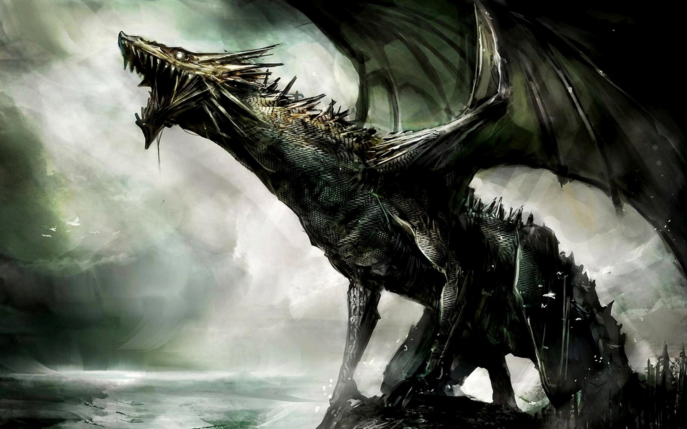
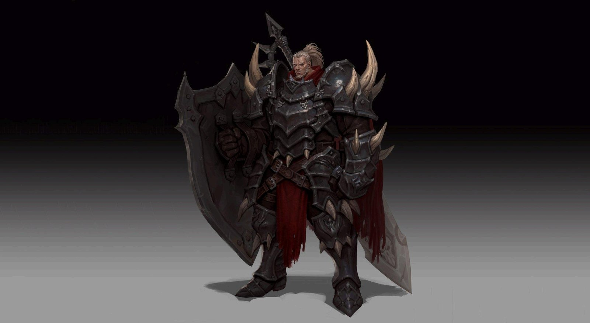
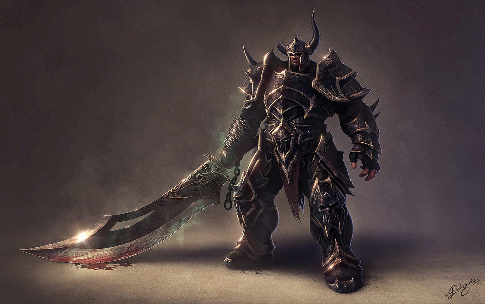

Belford
Trecho dos relatos antigos preservados nos salões de pedra da Velha Irus.
Dizem que antes de qualquer reino, antes mesmo dos nomes, existia apenas o silêncio e o vento. Nessa terra vasta, fértil e deserta, vagava um homem. Um andarilho de olhar firme e coração incansável. Seu nome era Belford.
Não era rei. Não era guerreiro. Era apenas um homem em busca de um lar. Ele liderava um pequeno grupo de viajantes — exilados, sonhadores, artesãos, mães com filhos nos braços — todos fugindo de guerras, doenças e invernos eternos de terras distantes.
Quando chegaram à planície costeira, entre a névoa e o mar, encontraram algo raro naquele mundo hostil: terra fértil, rios limpos, e um céu que não rugia. Belford olhou para o horizonte e disse apenas uma frase:
"Aqui fincaremos raízes. E as raízes virarão muralhas."
E assim nasceu a primeira cidade. Modesta. De pedra e madeira. Cercada por esforço e esperança. Mas era mais do que uma cidade: era um lar. Com o tempo, a cidade cresceu. Tornou-se conhecida por sua disciplina, sua bravura e sua posição estratégica à beira-mar.

Os Quatro Filhos
Belford deu origem a quatro filhos, nascidos do mesmo sangue, mas moldados por ideias muito diferentes. Cada um via o mundo com olhos próprios. E ao invés de impor um destino, ofereceu a eles liberdade para construir.
Não houve briga.
Não houve disputa.
Houve respeito.
Belford ajudou cada filho a erguer seus reinos sem escolher um lado. Sem coroas. Sem hierarquia. Seu legado foi um continente que respeita a força, valoriza a tradição e aprende com os próprios erros.
E mesmo quando os céus rugem com fogo, e os dragões descem das nuvens como demônios antigos, o espírito do andarilho permanece vivo em cada espada levantada, em cada muro erguido, em cada rugido respondido com coragem.

Irus
A Fortaleza do Mar. O primogênito ergueu a muralha viva do continente.

Kheltan
A Forja da Guerra. Onde as armas nascem na hora do desafio.

Lotun
O Reino dos Caçadores. Defesa era atraso; muros, fraqueza.
O Reino Oculto
O mais novo dos filhos. Silencioso. Espiritual. Observando.
Crônicas do Continente
Thorfinn, o Cavaleiro Negro
Oito anos dentro da carcaça de um dragão. Dois anos no mundo real.
Eve, a Capitã de Lotun
A garota desacreditada que forjou a própria lâmina com as mãos em carne viva.
A Grande Guerra
Quando os próprios dragões começaram a fugir de algo maior.
Vhar'Zhul, o Despertar do Fim
Ele não surgiu. Ele acordou.
Comércio em Belford
Escamas, cristais e troféus: as rotas, guildas e tratados que movem o continente.